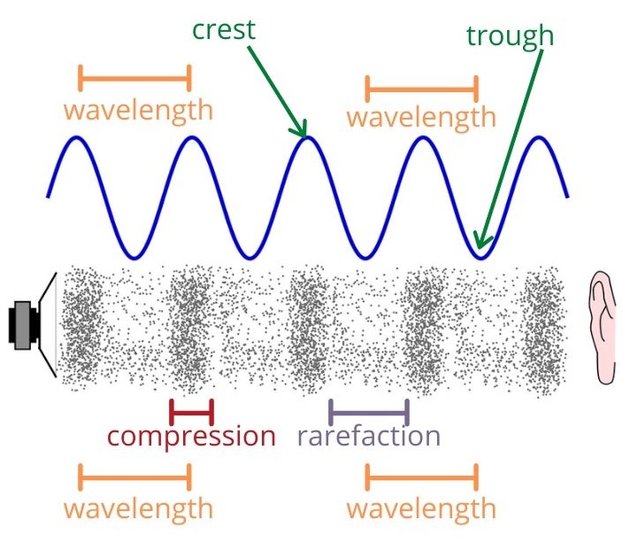
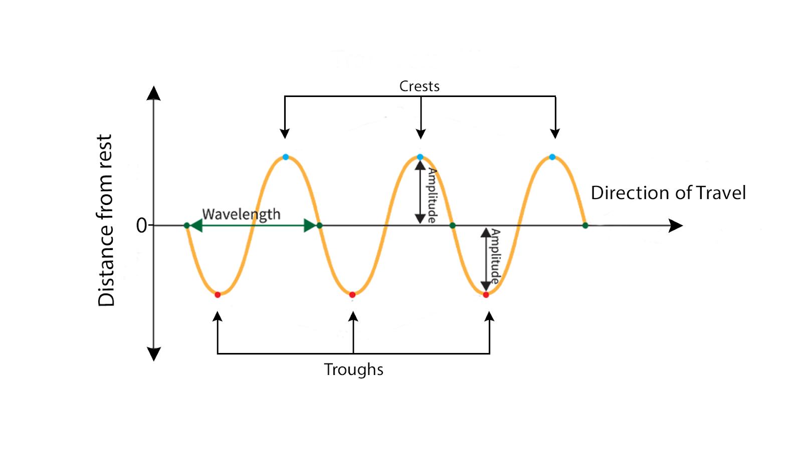

How energy travels through matter — transverse and longitudinal wave motion.
Waves are a way energy moves from one place to another without moving matter long distances. Waves are used in sound, light, communication, and many everyday technologies.


As wavelength increases, frequency decreases (and vice versa). They have an inverse relationship.
Higher frequency = more energy. Higher amplitude = more energy.